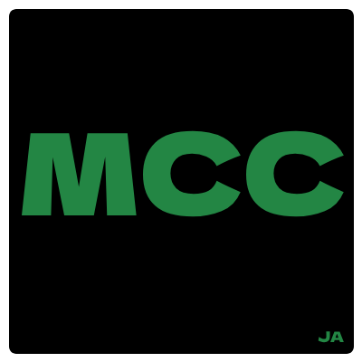

Addon engine
Extend MCC with Python addons and custom tools.

Create, run and manage Minecraft servers from one desktop app, with a dark GUI, addons, backups and MCC server commands
ABOUT
MCC 4 is a Minecraft server manager for Windows that can create, configure, run and manage multiple Vanilla and Forge servers. The newest build includes a dark interface, live console control, automatic and numbered backups, timed tasks, an addon engine, Java detection and persistent server storage inside your Windows AppData folder.
Extend MCC with Python addons and custom tools.
A modern dark GUI for server management and console control.
MCC detects your Java installation and limits Minecraft versions to compatible releases.
Create, list, restore and delete numbered Minecraft world backups.
Schedule server commands such as start, stop, save or custom console commands.
Servers and the server list are stored in %APPDATA%\.mcc so they survive app updates.
Use special .mcc! commands from the Minecraft server console and chat output.
MCC addons can package the selected server into a ZIP and upload it to your server.
GALLERY
RELEASE NOTES